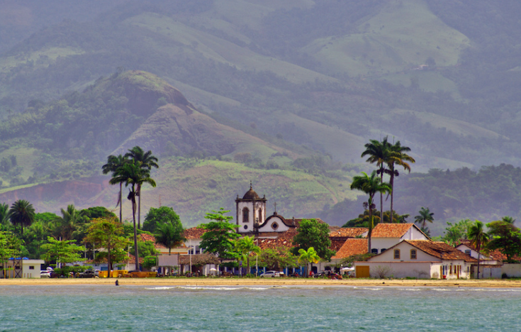

Brazil
 Sprawling across half of South America, Brazil is the fifth largest country in the world. White-sand beaches, tropical islands, music-filled metropolises and charming colonial towns are dotting its 7,500 km (4,600 mi) long coastline. Inland, Brazil tourist attractions consist of imposing waterfalls, wetlands filled with wildlife, and the untouched wilderness of the Amazon rainforest where several isolated tribes still live without any contact with the rest of the world.
Sprawling across half of South America, Brazil is the fifth largest country in the world. White-sand beaches, tropical islands, music-filled metropolises and charming colonial towns are dotting its 7,500 km (4,600 mi) long coastline. Inland, Brazil tourist attractions consist of imposing waterfalls, wetlands filled with wildlife, and the untouched wilderness of the Amazon rainforest where several isolated tribes still live without any contact with the rest of the world.
ParatiA paradise of tropical forests, waterfalls, emerald sea and coastal mountains, Parati is a popular tourist attraction located along Brazil’s Green Coast in the Rio de Janeiro state. Also spelled Paraty, this beautiful city is a former Portuguese colony established on the shores of the Bay of Ilha Grande. The heart of Parati is its historic center with cobbled streets and multicolored colonial houses, many of which now serve as bed-and-breakfast accommodations called pousadas. One of the most popular attractions are the colonial defense forts that still boast original walls and cannons. Named for a local swamp fish, Paraty sits on Brazil's southeastern coast, 125 miles south of Rio, with the Bocaino Mountains at its back. The small colonial town's center is a national historic monument with well-preserved buildings on its pedestrian-only streets. Take a boat trip out into the bay to the flotillas of islands and coves nearby. Explore sugarcane plantations and hike or take a train through Atlantica Forest. Keep an eye out for the monkeys that roam the cobblestone streets. |